Hi all,
A short one this week. Recently I wanted to look at some tennis data, and my usual go to is the tennis slam point by point data repo by Jeff Sackmann. Sometimes however the information you are after isn't always in the repository so it means venturing further to the tennisabstract.com website he hosts that contains thousands of different match reports that have been compiled together.
I am always on the hunt for "cool tennis stories" so when I come across them I want to be able to find the associated data.
Recently, I saw two stories that I thought I might want to later visualise.
The first was Iga Swiatek lost ten points in R16 of the French open. Total. That matches the most dominant tour-level performance--any tournament, any round--since 2010.
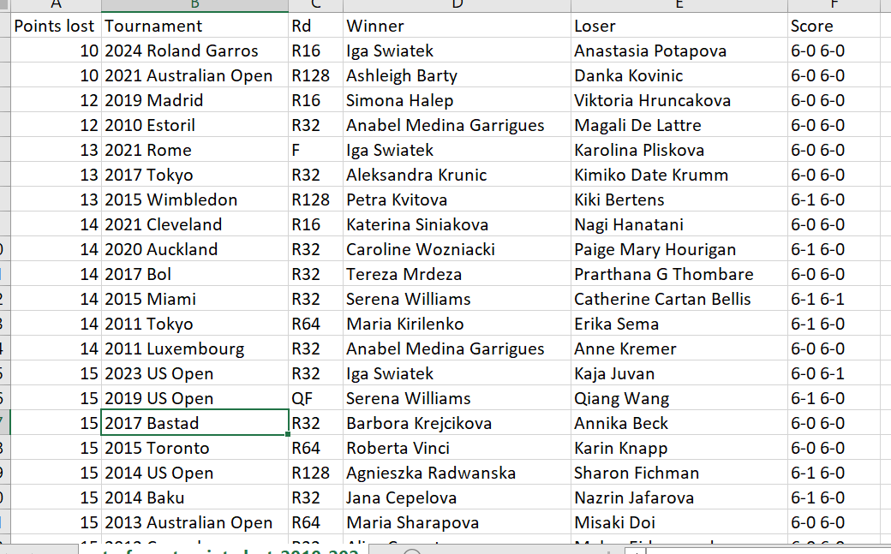
The second was that Roger Federer has the title of most Aces in a singles grand slam final. Which was done in the 2009 Wimbledon final, hitting 50 aces during the match.
So both these matches were hard to come by the data in terms of being in the repository but they do exist on tennis abstract.
Let's walk through the Iga example.
https://www.tennisabstract.com/charting/20240602-W-Roland_Garros-R16-Iga_Swiatek-Anastasia_Potapova.html
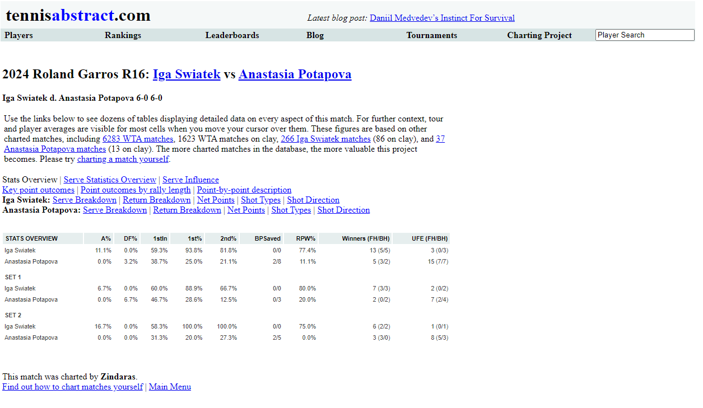
For some of the more standard point by point metrics we will need to refer to the "point-by-point description"
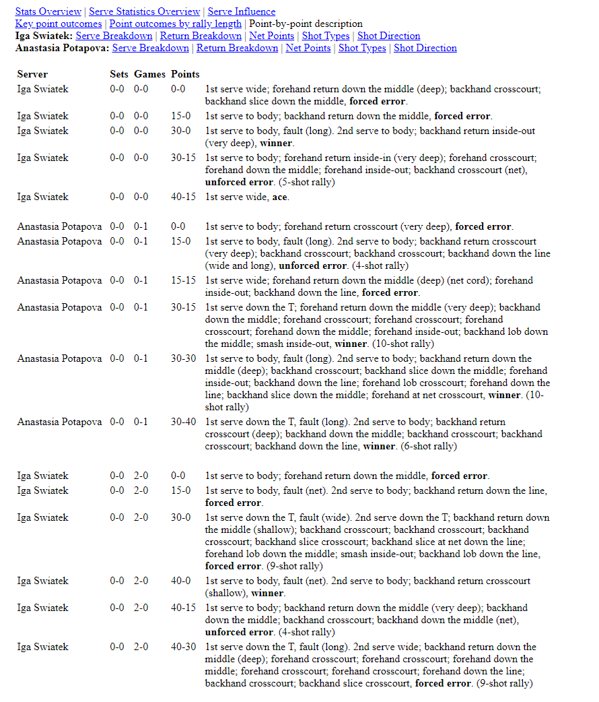
Amazing. It's not hugely detailed like the dataset in the standard repo's but at least it contains the point winners.
So let's take a look at the code...
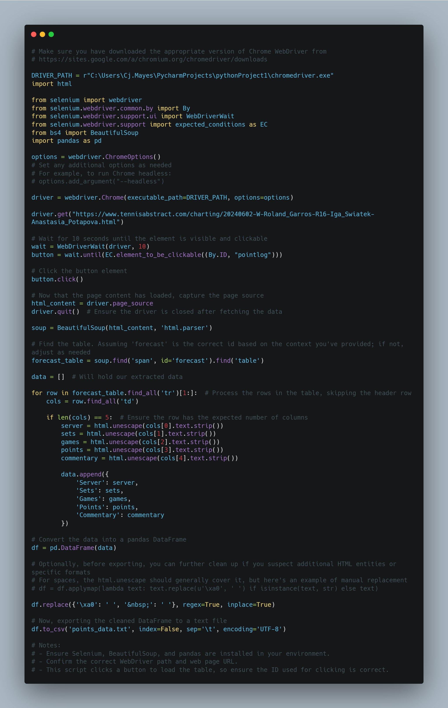
The full code can be found in the repository.
The code starts by setting the path to the Chrome WebDriver. This WebDriver is necessary to automate the Chrome browser. (Make sure you have the webdriver that suits the version of chrome you use)
Next, it imports the required libraries: html, selenium, BeautifulSoup, and pandas.
The code creates an instance of the Chrome WebDriver using the specified driver path and options.
It navigates to a specific URL using driver.get().
The code waits for a button element with the id "pointlog" to become clickable using WebDriverWait and the expected conditions. I put this step in because my chrome wasn't loading quick enough.
Once the button is clickable, it is clicked using the click() method.
The page source is captured using driver.page_source.
The WebDriver is then closed using driver.quit().
The captured page source is parsed using BeautifulSoup, creating a BeautifulSoup object named soup.
The code finds a table element with the id "forecast" using soup.find(). On the site tennis abstract website all the tables had the same structure.
It initializes an empty data list to store the extracted data.
It iterates over the rows of the forecast table (excluding the header row) using a for loop.
For each row, it extracts the data from the columns using cols = row.find_all('td').
If the row has the expected number of columns (5 in this case), it extracts the server, sets, games, points, and commentary data.
The extracted data is appended to the data list as a dictionary.
After all rows have been processed, the data list is used to create a pandas DataFrame.
The DataFrame is cleaned up by replacing specific HTML entities or formats using df.replace().
Finally, the cleaned DataFrame is exported to a text file named "points_data.txt".
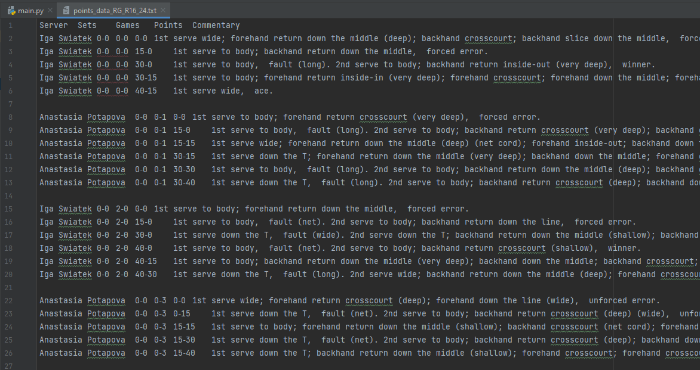
There we have it, a quick way to extract the information from the tennis abstract site.
GOING FURTHER
Remove the row line spaces,
Indicate whether it was a first or second serve,
Indicate point winners,
Flag for each row what the score then turned to.
That's it for this week. Enjoy accessing more tennis data.
LOGGING OFF,
CJ
 I am always on the hunt for "cool tennis stories" so when I come across them I want to be able to find the associated data.
Recently, I saw two stories that I thought I might want to later visualise.
The first was Iga Swiatek lost ten points in R16 of the French open. Total. That matches the most dominant tour-level performance--any tournament, any round--since 2010.
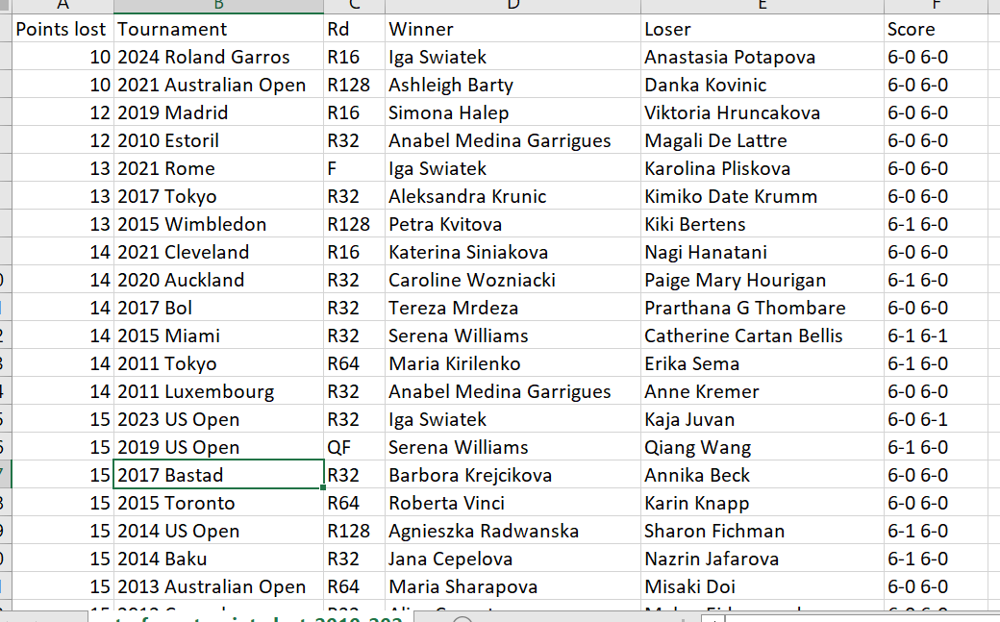
The second was that Roger Federer has the title of most Aces in a singles grand slam final. Which was done in the 2009 Wimbledon final, hitting 50 aces during the match.
So both these matches were hard to come by the data in terms of being in the repository but they do exist on tennis abstract.
Let's walk through the Iga example.
https://www.tennisabstract.com/charting/20240602-W-Roland_Garros-R16-Iga_Swiatek-Anastasia_Potapova.html
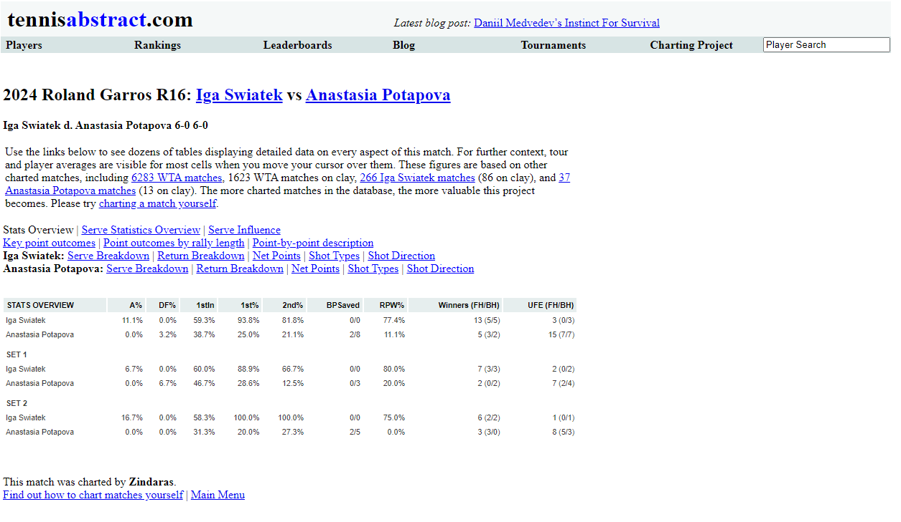
For some of the more standard point by point metrics we will need to refer to the "point-by-point description"
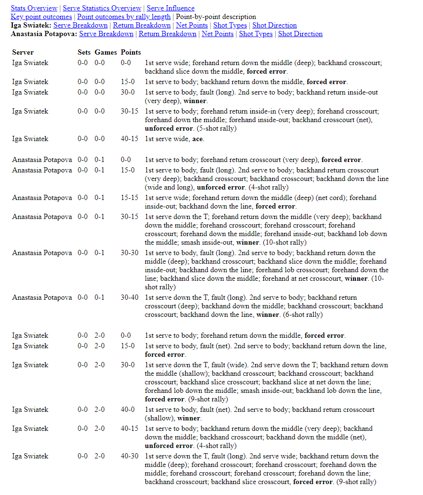
Amazing. It's not hugely detailed like the dataset in the standard repo's but at least it contains the point winners.
So let's take a look at the code...
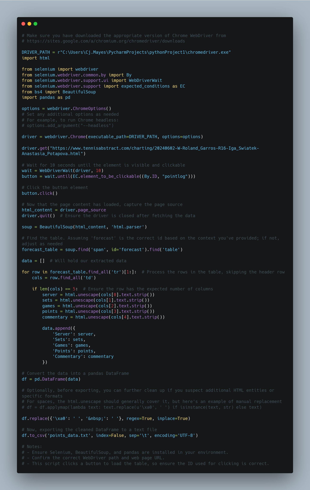
The full code can be found in the repository.
I am always on the hunt for "cool tennis stories" so when I come across them I want to be able to find the associated data.
Recently, I saw two stories that I thought I might want to later visualise.
The first was Iga Swiatek lost ten points in R16 of the French open. Total. That matches the most dominant tour-level performance--any tournament, any round--since 2010.
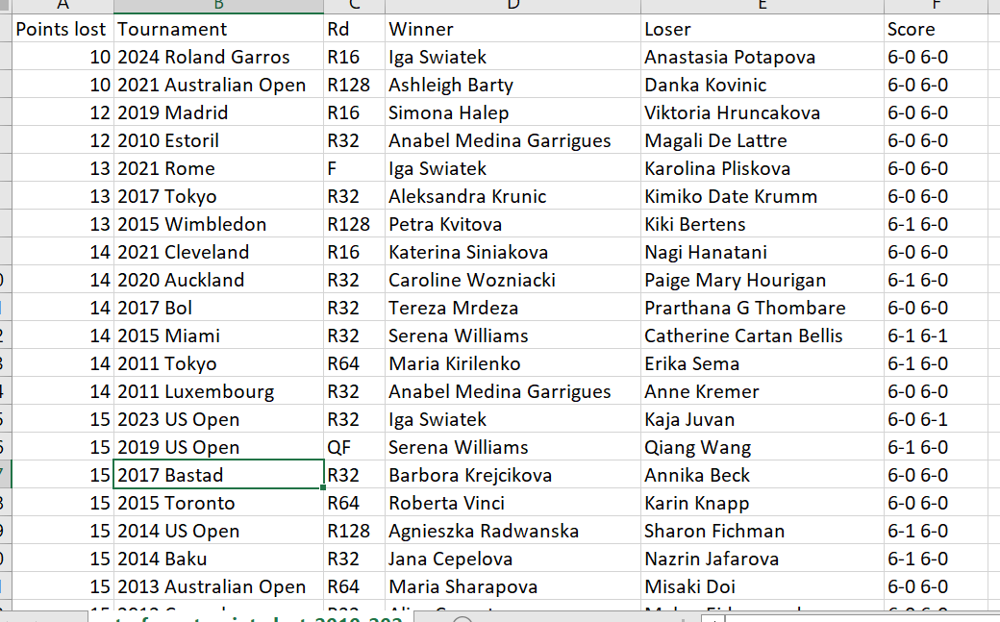
The second was that Roger Federer has the title of most Aces in a singles grand slam final. Which was done in the 2009 Wimbledon final, hitting 50 aces during the match.
So both these matches were hard to come by the data in terms of being in the repository but they do exist on tennis abstract.
Let's walk through the Iga example.
https://www.tennisabstract.com/charting/20240602-W-Roland_Garros-R16-Iga_Swiatek-Anastasia_Potapova.html
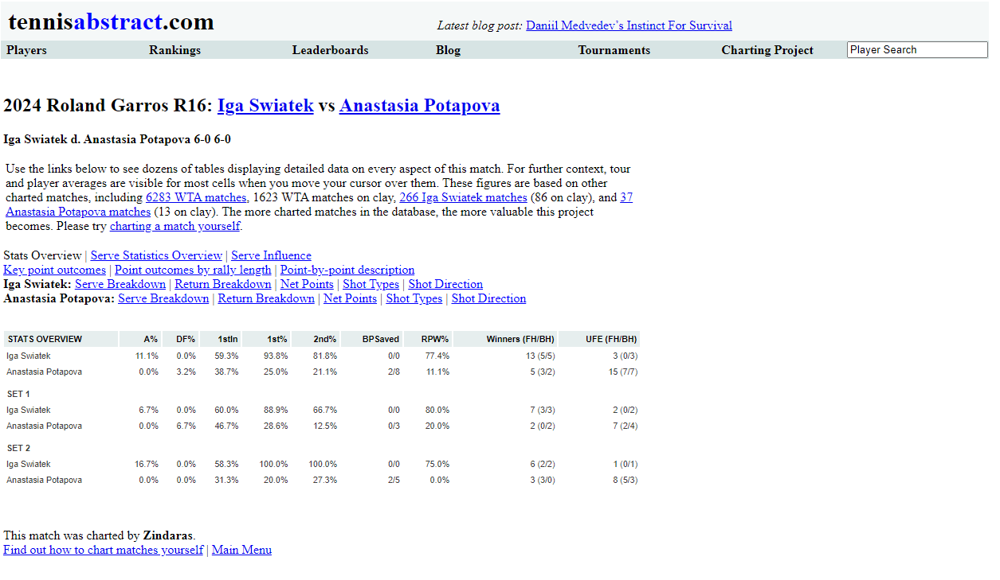
For some of the more standard point by point metrics we will need to refer to the "point-by-point description"
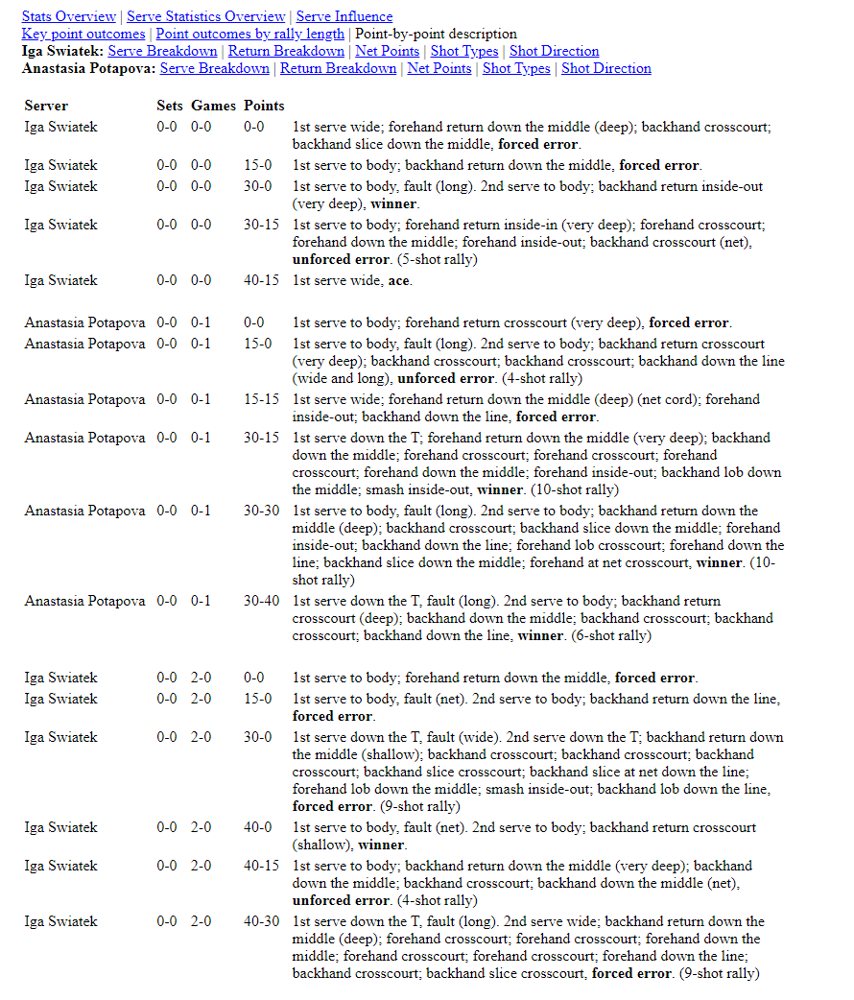
Amazing. It's not hugely detailed like the dataset in the standard repo's but at least it contains the point winners.
So let's take a look at the code...
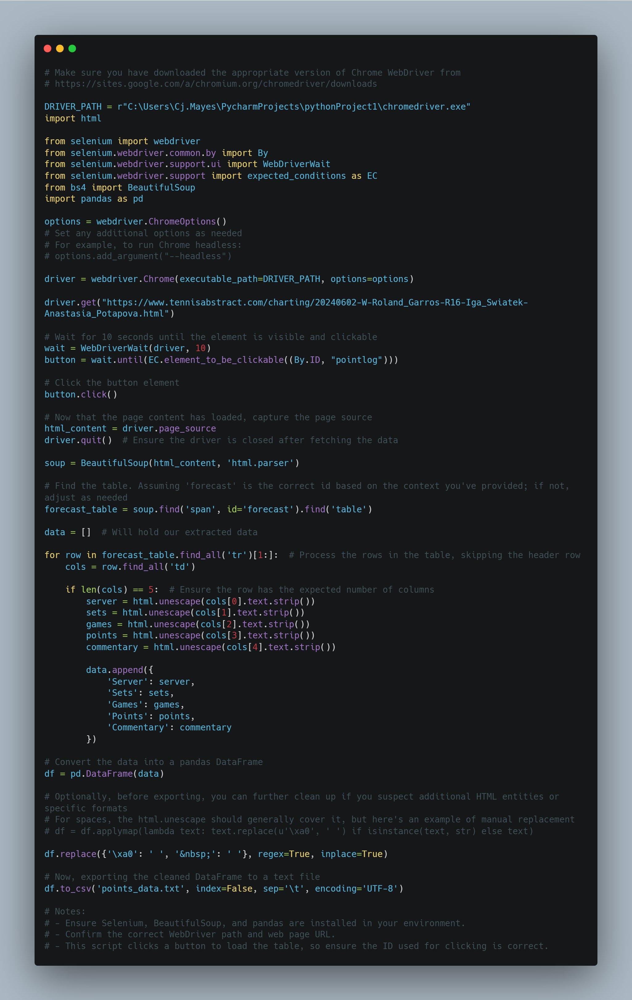
The full code can be found in the repository.